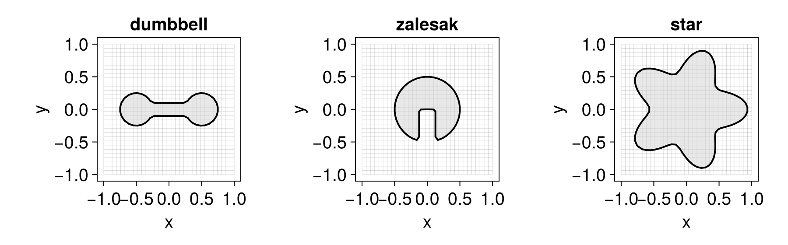

Level sets
A level set is just a real-valued AbstractMeshField whose zero contour represents the interface of interest (see Grids and mesh fields). There is no separate "shape" type: you describe a geometry by the implicit function that vanishes on its boundary, sample it with e.g. MeshField(f, grid), and combine geometries with set operations. This page collects the common patterns.
Signed distance functions
The most convenient implicit function is a signed distance function (SDF): ϕ(x) returns the distance from x to the interface, negative inside and positive outside. The same one-liner builds a circle in 2D or a sphere in 3D — only the grid's dimension changes:
using LevelSetMethods, LinearAlgebra
grid = CartesianGrid((-1, -1), (1, 1), (32, 32))
circle = MeshField(x -> norm(x) - 0.5, grid) # ‖x‖ - r is a true SDF, in any dimensionMeshField on CartesianGrid in ℝ²
├─ domain: [-1.0, 1.0] × [-1.0, 1.0]
├─ nodes: 32 × 32
├─ spacing: h = (0.06452, 0.06452)
├─ valtype: Float64
└─ values: min = -0.4544, max = 0.9142The same function and grid can build a NarrowBandMeshField in one step, storing values only on a band of nodes around the interface rather than the whole grid (see Narrow-band fields):
circle_band = NarrowBandMeshField(x -> norm(x) - 0.5, grid; nlayers = 3)
circle_bandNarrowBandMeshField on CartesianGrid in ℝ²
├─ domain: [-1.0, 1.0] × [-1.0, 1.0]
├─ nodes: 32 × 32
├─ spacing: h = (0.06452, 0.06452)
├─ active: 380 nodes (3-layer halo)
├─ valtype: Float64
└─ values: min = -0.2543, max = 0.2593Non-SDF implicit functions
Any function with the correct sign works — it need not be a true distance. A box is easy to write, but is not a true SDF away from its faces:
box = MeshField(x -> maximum(abs.(x) .- (0.6, 0.3) ./ 2), grid)MeshField on CartesianGrid in ℝ²
├─ domain: [-1.0, 1.0] × [-1.0, 1.0]
├─ nodes: 32 × 32
├─ spacing: h = (0.06452, 0.06452)
├─ valtype: Float64
└─ values: min = -0.1177, max = 0.85Near the corners the value is not the actual distance, so ‖∇ϕ‖ ≠ 1. If a downstream algorithm needs an SDF (e.g. a narrow band, or curvature near corners), reinitialize it with reinitialize!:
reinitialize!(box)MeshField on CartesianGrid in ℝ²
├─ domain: [-1.0, 1.0] × [-1.0, 1.0]
├─ nodes: 32 × 32
├─ spacing: h = (0.06452, 0.06452)
├─ valtype: Float64
└─ values: min = -0.1177, max = 1.116Combining geometries with set operations
A level set denotes the domain $Ω = \{x : ϕ(x) ≤ 0\}$. Operations on those domains are represented by simple value combinations — union by min, intersection by max, set difference by max(ϕ₁, -ϕ₂) — and are available as ∪, ∩, setdiff (with in-place union!, intersect!, setdiff!).
A dumbbell is the union of two disks and a connecting bar:
disk(c) = MeshField(x -> norm(x .- c) - 0.25, grid)
bar = MeshField(x -> maximum(abs.(x) .- (1.0, 0.2) ./ 2), grid)
dumbbell = disk((-0.5, 0.0)) ∪ disk((0.5, 0.0)) ∪ barMeshField on CartesianGrid in ℝ²
├─ domain: [-1.0, 1.0] × [-1.0, 1.0]
├─ nodes: 32 × 32
├─ spacing: h = (0.06452, 0.06452)
├─ valtype: Float64
└─ values: min = -0.2139, max = 0.868A Zalesak disk is a disk with a rectangular slot cut out:
slot = MeshField(x -> maximum(abs.(x .- (0.0, -0.5)) .- (0.25, 1.0) ./ 2), grid)
zalesak = setdiff(MeshField(x -> norm(x) - 0.5, grid), slot)MeshField on CartesianGrid in ℝ²
├─ domain: [-1.0, 1.0] × [-1.0, 1.0]
├─ nodes: 32 × 32
├─ spacing: h = (0.06452, 0.06452)
├─ valtype: Float64
└─ values: min = -0.2258, max = 0.9142Combining SDFs with min/max keeps the sign correct everywhere but breaks the exact distance property near the seams. Reinitialize the result if you need a true SDF.
Parametric interfaces
Interfaces described in other coordinates work just as well. A star is convenient in polar form (this one is not an SDF):
star = MeshField(grid) do x
r, θ = norm(x), atan(x[2], x[1])
return r - 0.75 * (1 + 0.25 * cos(5θ))
endMeshField on CartesianGrid in ℝ²
├─ domain: [-1.0, 1.0] × [-1.0, 1.0]
├─ nodes: 32 × 32
├─ spacing: h = (0.06452, 0.06452)
├─ valtype: Float64
└─ values: min = -0.837, max = 0.7968Visualizing the result
Loading a Makie backend lets you inspect any of these level sets directly (see the Makie extension). The interior $ϕ < 0$ is shaded and the zero contour drawn on top:
using CairoMakie
LevelSetMethods.set_makie_theme!()
fig = Figure(; size = (900, 280))
for (n, (name, ψ)) in enumerate(("dumbbell" => dumbbell, "zalesak" => zalesak, "star" => star))
ax = Axis(fig[1, n]; title = name)
plot!(ax, ψ)
end
fig